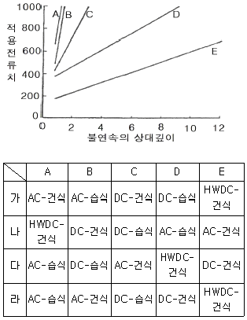
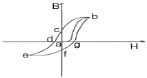
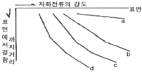

자기비파괴검사산업기사 (2014-03-02 기출문제)
1과목: 비파괴검사 개론
1. 각종 비파괴검사법에 관한 설명 중 옳은 것은?
- 와류탐상검사는 비접촉, 고속탐상, 자동탐상이 가능하고 내부결함의 검출도 우수하다.
- 음향방출검사는 미시균열의 성장유무, 회전체 이상진단 등의 모니터링화가 가능하다.
- 침투탐상검사는 금속, 비금속 등 모든 재료의 적용에 가능하나, 제품의 크기, 형상 등에 제한을 받는다.
- 자분탐상검사는 강자성체에만 적용이 가능하며, 내부결함 검출도 우수하다.
(정답률: 70%)

2. 침투탐상시험 방법 중 검출감도가 가장 우수한 시험방법은?
- 용제제거성 염색침투탐상시험
- 후유화성 염색침투탐상시험
- 용제제거성 형광침투탐상시험
- 후유화성 형광침투탐상시험
(정답률: 53%)
3. 시험 재료의 두께 차 또는 주변 재질에 대한 밀도 차이로 재료의 내부 상태를 알아보는 비파괴검사법은?
- 침투탐상검사
- 방사선투과검사
- 와전류탐상검사
- 자분탐상검사
(정답률: 55%)
4. 와전류탐상시험에 대한 설명으로 틀린 것은?
- 전도성 시험체 내부에 발생한 유도전류를 이용한다.
- 와전류 분포의 변화를 시험코일의 임피던스 변화로 결함을 찾아낸다.
- 와전류탐상검사는 강자성체나 비자성체인 전도체에 적용할 수 있다.
- 시험체 표면과 시험코일과의 거리 변화를 이용하여 결함의 형상 및 크기를 알 수 있다.
(정답률: 43%)
5. 압전효과(Piezoelectric Effect)를 이용하여 불연속을 검출할 수 있는 비파괴검사법은?
- 방사선투과검사
- 자분탐상검사
- 와전류탐상검사
- 초음파탐상검사
(정답률: 54%)
6. 경금속과 중금속의 비중을 구분하는 것으로 옳은 것은?
- 약 1
- 약 2
- 약 5
- 약 8
(정답률: 63%)
7. 마그네슘합금을 용해할 때의 유희사항에 대한 설명으로 틀린 것은?
- 수소를 흡수하기 쉬우므로 탈가스 처리를 해야 한다.
- 주조조직을 미세화하기 위하여 용탕 온도를 적절하게 관리한다.
- 규사 등이 환원되어 Si의 불순물이 많아지므로 불순물이 적어지도록 관리한다.
- 고온에서 산화하기 쉽고, 승온하면 연소하므로 탄소분말을 뿌려 CO2 가스를 발생시켜 산화를 방지한다.
(정답률: 65%)
8. 특수용도용 합금강에서 일반적으로 전자기적 특성을 개선하는 원소는?
- Ni
- Mo
- Si
- Cr
(정답률: 52%)
9. 수소저장합금에 대한 설명으로 틀린 것은?
- 수소가스와 반응하여 금속수소화물이 된다.
- 수소의 흡장ㆍ방출을 되풀이하는 재료는 분화하게 된다.
- 합금이 수소를 흡장할 때는 팽창하고, 방출할 때는 수축한다.
- 수소가 방출되면 금속수소화물은 원래의 수소저장합금으로 되돌아가지 않는다.
(정답률: 53%)
10. 0.3%C 탄소강을 860℃에서 서냉 하였을 때 펄라이트가 20%이었다면 펄라이트 중의 Fe3 함량(%)은? (단, 공석점은 0.8%C이며, 탄소의 최대 고용량은 6.67% 이다.)
- 2.4%
- 4.5%
- 6.8%
- 8.5%
(정답률: 36%)
11. 용질 원자가 침입 혹은 치환형태로 고용되어 격자의 왜곡이 발생할 때 생기는 현상이 아닌 것은?
- 전기저항이 증가한다.
- 합금의 강도, 경도가 커진다.
- 소성변형에 대한 저항이 크다.
- 전도전자가 산란되어 이동을 쉽게 한다.
(정답률: 42%)
12. Ni-Cu계 합금으로 전기저항이 높아 전열선 등의 전기저항 재료로 사용되는 것은?
- 엘린바(Elinvar)
- 콘스탄탄(Constantan)
- 문쯔메탈(Muntzmetal)
- 퍼멀로이(Permalloy)
(정답률: 63%)
13. 우수한 제진기능(흑연의 진동에너지 흡수) 때문에 공작기계의 베드(Bed)로 가장 많이 사용되고 있는 것은?
- 탄소강
- 베어링강
- 회주철
- 고속도공구강
(정답률: 43%)
14. 고로에서 출선한 용선에 공기를 불어 넣어 함유된 탄소와 수소 등 그 밖의 불순물을 제거하여 강을 만드는 방법은?
- 전로 제강법
- 평로 제강법
- 전기로 제강법
- 도가니로 제강법
(정답률: 38%)
15. 입자분산강화 재료와 섬유강화재료의 성질을 비교, 설명한 것으로 옳은 것은?
- 섬유강화재료의 강화는 섬유의 임계체적비와 무관하다.
- 분산강화재료의 강도는 입자의 체적비가 클수록 증가하며 20vol%까지가 한계이다.
- 분산강화재료의 강도는 입자간 거리에 비례하고 입자직경에는 거의 영향을 받지 않는다.
- 섬유강화재료는 섬유의 방향에 따라 이방성은 매우 크지만 가공성은 분산강화재료보다 양호하다.
(정답률: 58%)
16. 연강용 피복아크 용접봉 길이의 일반적인 허용오차는 얼마정도인가?
- ±3mm
- ±5mm
- ±7mm
- ±9mm
(정답률: 49%)
17. 용접전류 200A, 아크 전압 25V, 용접속도 150mm/min일 때 용접입열은 얼마인가?
- 2000J/cm
- 2000cal/cm
- 20000J/cm
- 20000cal/cm
(정답률: 59%)
18. 서브머지드 아크용접(SAW)에서 용접전류와 속도가 일정할 때, 아크전압이 높아짐에 따라 나타나는 현상이 아닌 것은?
- 플럭스 소모가 많아진다.
- 크랙 감수성이 증가한다.
- 기공 발생이 증가된다.
- 언더컷 발생 우려가 있다.
(정답률: 48%)
19. 용접부에 발생하는 인장 및 압축 잔류응력이 용접 구조물에 미치는 영향에 관한 설명 중 인장 잔류응력의 영향이 아닌 것은?
- 피로강도의 저하를 가져온다.
- 좌굴현상을 발생하게 한다.
- 파괴전파를 용이하게 한다.
- 응력부식 현상을 촉진한다.
(정답률: 46%)
20. 아크 용접시 가는 케이블을 사용할 때 발생하는 현상은?
- 저항이 적다.
- 전류가 정상이다.
- 아크가 안정하다.
- 발열 한다.
(정답률: 59%)
2과목: 자기탐상검사 원리 및 규격
21. 시험편이 서로 접촉한 경우 또는 다른 철강재료로 시험면을 문질러서 나타나는 모양을 무엇이라 하는가?
- 강전류에 의해서 응집된 자분 모양
- 시험면의 거칠기 때문에 생기는 자분 모양
- 각부와 큰단면의 급변부에 생기는 자분 모양
- 자기펜 흔적
(정답률: 60%)
22. 다음 중 자분탐상시험에서 의사 모양의 주원인이 되는 것은?
- 자분의 잘못 선택
- 자화전류의 과다
- 자화전류의 과소
- 탈자전류의 과다
(정답률: 72%)
23. 외부 자계에 의해 재료 내부에 반대방향으로 자기모멘트가 유도되어 자석에 반발되는 재료의 자성을 무엇이라 하는가?
- 강자성
- 상자성
- 반자성
- 비자성
(정답률: 71%)
24. 그림은 사용전류 및 자분의 종류와 탐상 가능한 불연속의 표면으로부터의 깊이와의 관계를 나타낸 도표이다. ABCDE순으로 옳게 짝지워진 것은?

- 가
- 나
- 다
- 라
(정답률: 74%)
25. 고탄소강과 저탄소강을 용접하여 연삭한 후 자분탐상검사를 하였더니 용접부에 자분지시 모양이 나타났다. 이 자분모양의 원인은?
- 결함에 의한 지시모양
- 자화전류의 과다에 의한 지시모양
- 표면거칠기에 의한 지시모양
- 투자율이 다른 재질의 경계 지시모양
(정답률: 78%)
26. 그림의 자기이력곡선에서 초기자화곡선은?

- a~b
- b~c
- c~d
- a~f
(정답률: 77%)
27. 자분탐상검사에서 불연속부를 검출할 수 있는 동기가 되는 재료의 특성은?
- 투자율
- 정전용량
- 자기저항
- 전도도
(정답률: 66%)
28. 자화방법을 선택하는데 있어 고려해야 할 사항이 아닌 것은?
- 자계의 방향은 가능한 한 시험면에 평행이 되게 한다.
- 반자계를 적게 한다.
- 자계의 방향과 예상되는 결함방향이 평행이 되게 한다.
- 시험면을 손상시키면 안되는 경우는 직접 통전하지 않는 방법을 선정한다.
(정답률: 79%)
29. 반지름 1m의 원형으로 한번 감은 도선에 1000A의 전류가 흐르면 원형 전류의 중심에서 자계의 세기는?
- 125 A/m
- 250 A/m
- 500 A/m
- 1000 A/m
(정답률: 56%)
30. 다음 중 자분 현탁액의 농도를 측정하는 방법은?
- pH측정
- 침전시험
- 입도시험
- 진동시험
(정답률: 61%)
31. 철강 재료의 자분탐상 시험방법 및 자분모양의 분류(KS D0213)에서 시험체 종류에 따라 적용하는 자계의 강도를 나타낸 것으로 옳은 것은?
- 일반적인 구조물 및 용접부는 연속법에서 1200~2000A/m이다.
- 주단조품 및 기계부품은 잔류법에서 3600~5600A/m이다.
- 일반적으로 퀜칭한 부품은 연속법에서 2400~3600A/m이다.
- 공구강 등의 특수재 부품은 잔류법에서 6400~8000A/m이다.
(정답률: 68%)
32. 철강 재료의 자분탐상 시험방법 및 자분모양의 분류(KS D0213)에서 표준시험편의 표시가 A1-7/50(직선형)으로 되어있다. 가운데 사선의 왼쪽 7 이 의미하는 것은?
- 시험편의 두께
- 시험편의 길이
- 인공흠의 깊이
- 인공흠의 길이
(정답률: 58%)
33. 철강 재료의 자분탐상 시험방법 및 자분모양의 분류(KS D0213)에 따른 자분모양의 분류에 있어 해당되지 않는 자분모양은 무엇인가?
- 균열에 의한 자분모양
- 독립한 선상의 자분모양
- 독립한 원형상의 자분모양
- 용입불량, 융합불량에 의한 자분모양
(정답률: 71%)
34. 보일러 및 압력용기에 대한 자분탐상검사(ASME Sec.V Art.7)에 따라 페인트가 있는 상태에서 자분탐상시험을 할 때 나타난 지시가 최대 허용할 수 있는 지시 크기와 비교하여 어느 정도 이상이면 도막을 제거하고 재검사를 하여야 하는가?
- 10%
- 30%
- 50%
- 80%
(정답률: 61%)
35. 보일러 및 압력용기에 대한 표준자분탐상검사(ASME Sec.V Art.25 SE-709)에 따라 시험면에 대한 자장의 강도설정에 활용할 수 있는 것의 표시로 틀린 것은?
- 전류계
- 알고있는 불연속부
- 인공불연속부
- 홀(Hall)효과 프로브-접선자장강도
(정답률: 50%)
36. 철강 재료의 자분탐상 시험방법 및 자분모양의 분류(KS D0213)에 따라 직류전류로 자분탐상시험한 결과 자분지시가 나타났다. 이 지시가 표면불연속인지 표면하 불연속인지를 확인하기 위한 방법으로 옳은 것은?
- 탈자 후 교류로 재시험한다.
- 자분을 불어낸 후 같은 방법으로 재시험한다.
- 탈자 후 반파정류 직류로 재시험한다.
- 자분을 불어낸 후 충격전류로 재시험한다.
(정답률: 69%)
37. 보일러 및 압력용기에 대한 자분탐상검사(ASME Sec.V Art.7)에 따라 코일법으로 탐상시험을 할 때 시험체의 길이가 10인치, 직경이 2인치인 강봉을 5회 코일을 감아 자화할 때 요구되는 자화전류는 몇 A 인가?
- 1000
- 1400
- 1800
- 2000
(정답률: 53%)
38. 철강 재료의 자분탐상 시험방법 및 자분모양의 분류(KS D0213)에서 자분탐상시험에 의한 결함의 자분 모양이 의사모양 여부를 확인하는 방법 중 틀린 것은?
- 자기펜 자국은 탈자 후 재시험하면 자분모양이 없어진다.
- 시험면이 거칠어서 발생하는 자분모양은 시험면을 매끄럽게 해서 재시험을 하면 자분모양이 없어진다.
- 강전류로 자분이 응집될 경우는 전류를 작게 하거나 연속법으로 시험하면 없어진다.
- 투자율의 급변부에 나타나는 자분모양은 매크로시험, 현미경시험 등 자분탐상시험 이외의 시험으로 확인할 수 있다.
(정답률: 54%)
39. 보일러 및 압력용기에 대한 자분탐상검사(ASME Sec.VArt.7)에서 극간법(Yoke)에 사용되는 요크의 인상력(Lifting Power)의 기준으로 옳은 것은?
- 직류식인 경우 4.5kg 이상
- 영구자석인 경우 4.5kg 이상
- 교류식인 경우 4.5kg 이상
- 교류, 직류식 모두 4.5kg 이상
(정답률: 58%)
40. 보일러 및 압력용기에 대한 표준자분탐상검사(ASME Sec.V Art.25 SE-709)에서 건식자분에 의한 탐상 결과, 표면직하 불연속의 원인으로 형성된 자분모양은 표면 불연속의 자분모양과 비교하여 일반적으로 어떤 형태를 나타내는가?
- 의사모양으로 나타난다.
- 자분모양에 전혀 차이가 없다.
- 희미한 자분모양으로 나타난다.
- 더 선명한 자분모양으로 나타난다.
(정답률: 49%)
3과목: 자기탐상검사
41. 다음 중 등유에 분산시킨 검사액의 특징이 아닌 것은?
- 화재의 위험성이 있다.
- 활성제를 첨가하면 자분의 분산성이 커진다.
- 첨가물로 방청제가 사용된다.
- 결함검출감도가 물분산매보다 높다.
(정답률: 53%)
42. 다음에 열거한 자화방법 중 선형자화 방법은?
- 통전법
- 중앙전도체법
- 코일법
- 프로드법
(정답률: 66%)
43. 습식자분에서 검사액에 요구되는 성질로 틀린 것은?
- 자분의 분산성이 좋을 것
- 자분의 현탁성과 유지성이 좋을 것
- 시험체와의 접착성이 좋을 것
- 시험면에 대하여 적심성이 좋을 것
(정답률: 60%)
44. 자분탐상시험법으로 사용 중에 있는 시험품의 정기 또는 보수검사를 했을 때 찾아낼 수 있는 결함은? (단, 제작시 결함이 없었다고 가정한다.)
- Prosity
- Fatigue Crack
- Lack of Fusion
- Lack of Penetration
(정답률: 69%)
45. 다음 중 건식자분에 대한 설명으로 옳은 것은?
- 유동성이 좋아 표면균열 검사에 적합하다.
- 다량의 부품 검사에 효과적이다.
- 투자력이 좋아 표면하 균열 검사에 효과적이다.
- 건식자분은 착색제가 불필요하다.
(정답률: 56%)
46. 외경 3인치인 환봉을 축통전법으로 원형자화할 경우 자화전류로 가장 적합한 것은?
- 약 100~330 Ampere/인치
- 약 300~500 Ampere/인치
- 약 500~700 Ampere/인치
- 약 700~900 Ampere/인치
(정답률: 46%)
47. 시험체를 유도전류법(Induced current)으로 검사할 때 자계를 확대하기 위해 구멍 안에 넣는 물체로 가장 적절한 것은?
- 구 형태의 구리
- 평평한 형태의 구리
- 구 형태의 연철
- 평평한 형태의 연철
(정답률: 48%)
48. 누설자속탐상법의 특징을 자분탐상검사와 비교하여 설명한 것으로 틀린 것은?
- 결함에 대한 정량적인 평가가 가능하다.
- 누설자속탐상법에서도 자분탐상검사와 비슷한 극간법, 축통전법, 전류관통법, 코일법 등의 자화방법이 적용된다.
- 복잡한 형상에도 효과적으로 적용할 수 있다.
- 자동, 고속으로 검사할 수 있고, 자분탐상검사에 비해서 더 깊은 결함을 검사할 수도 있다.
(정답률: 52%)
49. 연속법에서 건식자분을 적용하는 적당한 시기는?
- 자화 전에
- 자화 중에
- 자화 후에
- 아무 때나
(정답률: 73%)
50. 자분탐상검사에서 비관련지시(Non-relevant indication) 와 거짓지시(False indication)의 차이는?
- 비관련지시는 자기력에 의해 생성되지만 거짓지시는 자기력과는 무관하다.
- 비관련지시는 전류에 의해 생성되지만 거짓지시는 자기력에 의해 생성된다.
- 비관련지시는 강자성일 때 주로 발생되지만 거짓지시는 자기장과는 무관하다.
- 비관련지시는 검사품의 형상에 따라 생성되고 거짓지시는 검사자에 따라 다르다.
(정답률: 43%)
51. 비형광자분을 사용한 검사에서 자분모양을 관찰할 때 시험면의 최소 밝기는 얼마인가?
- 500 lx
- 1000 lx
- 2000 lx
- 4000 lx
(정답률: 66%)
52. 열처리 전에 검출된 결함을 모두 제거하고 열처리를 수행한 후에 시험체를 다시 검사하였다면 이 때 가장 많이 검출될 수 있는 결함은?
- 터짐
- 기공
- 파이프
- 스트링거
(정답률: 60%)
53. 자분탐상검사 장비의 성능 점검 내용의 연결이 틀린 것은?
- 프로드 장비 - 전류계의 점검
- 거치식(축통전법) 장비 - 전류계의 점검
- 극간식 장비 - Lifting Power Block
- 코일식 장비 - 자장계
(정답률: 49%)
54. 강용접부의 자분탐상검사시 재질경계지시와 유사한 자분모임의 결함은?
- 오버 랩
- 언더 컷
- 융합 부족
- 크레이터 크랙
(정답률: 44%)
55. 중앙전도체법(Central Conductor) 또는 전류관통법(Through Conductor Method)에 대한 특징이 아닌 것은?
- 시험체에 선형자장을 형성시킨다.
- 시험체에 직접적인 전류의 접촉이 되지 않는다.
- 관통된 구멍이 있는 시험체의 검사에 매우 적합하다.
- 직경이 큰 시험체는 여러 번 나누어서 검사해야 한다.
(정답률: 46%)
56. 그림은 적용하는 자화전류(교류, 직류, 삼상전파정류, 단상 반파정류)에 따라 표면하의 결함 검출능력이 다르다는 것을 보여준다. 여기서 교류는 어느 것인가?

- a
- b
- c
- d
(정답률: 71%)
57. 자분탐상시험시 고려해야 할 사항 중 틀린 것은?
- 자계 또는 자속의 방향이 시험체의 표면에 가능한 한 평행이 되도록 한다.
- 내부결함의 검출 또는 연속법에 의한 시험의 경우에는 교류로 자화한다.
- 대형 시험체는 국부적으로 자화시키는 자화방법을 선택한다.
- 검출하고자 하는 결함에 가능한 한 수직이 되는 방향의 자속을 시험체에 형성시킨다.
(정답률: 42%)
58. 코일법에서 시험체 길이 대 직경비가 5이며, 코일의 권선수가 10일 때 자화에 필요한 전류 값은?
- 500A
- 700A
- 5000A
- 7000A
(정답률: 59%)
59. 코일법으로 직경 50mm, 길이 125mm 인 환봉을 자분탐상검사할 때 요구되는 자화전류가 3600A 라면 시험체에 코일을 몇 회 감아야 하는가?
- 3회
- 4회
- 5회
- 6회
(정답률: 53%)
60. 다음 중 강자성체(Ferro-Magnetic Material)가 아닌 것은?
- 철(Steel)
- 니켈(Nickel)
- 구리(Copper)
- 코발트(Cobalt)
(정답률: 77%)